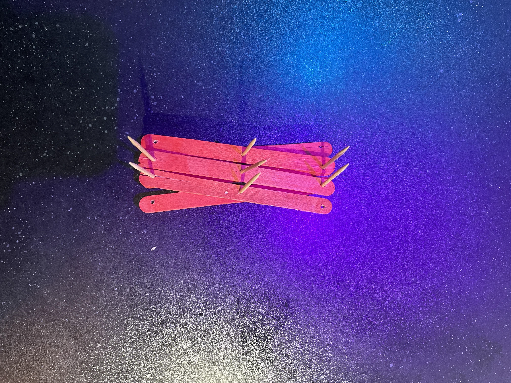

Generation Plastic Soup
A battle for our oceans. Game Jam 2025.
[ Spatial Experience Designer | Physical Craftsman | AI Lab Operator ]
Bridging the gap between analog woodworking, tactile craftsmanship, and immersive digital experiences.
A battle for our oceans. Game Jam 2025.

Analog ink meets digital precision.

Social interaction through play.

Custom built operational arcade claw.

Visual identity homage to analog film.

Retro-inspired arcade action and game physics.

Storytelling through atmosphere.

Digital painting for gaming communities.

Rapid physical tabletop chaos.

Bold branding for local sports community.

Educational support workflows.

Curated multidisciplinary CMD explorations.

Welcome to my digital chaos. I'm Casper (Delft, '97), a CMD student at Hogeschool Utrecht with a background that started in the physical world of woodworking, electricity, and horticulture.
I combine a practical maker-mindset with digital design. Whether it's crafting custom furniture inspired by Poul Cadovius, building smart home integrations, or operating my own Linux AI Homelab, I love crafting just as much behind my laptop as I do in the workshop.
Beyond design, I run gaming communities (150+ members) and explore hands-on skills like screen-printing, goldsmithing, and set decoration. My mission? To create immersive experiences that pull people out of reality.
Send a data packet to my terminal. I usually respond within 48 hours.